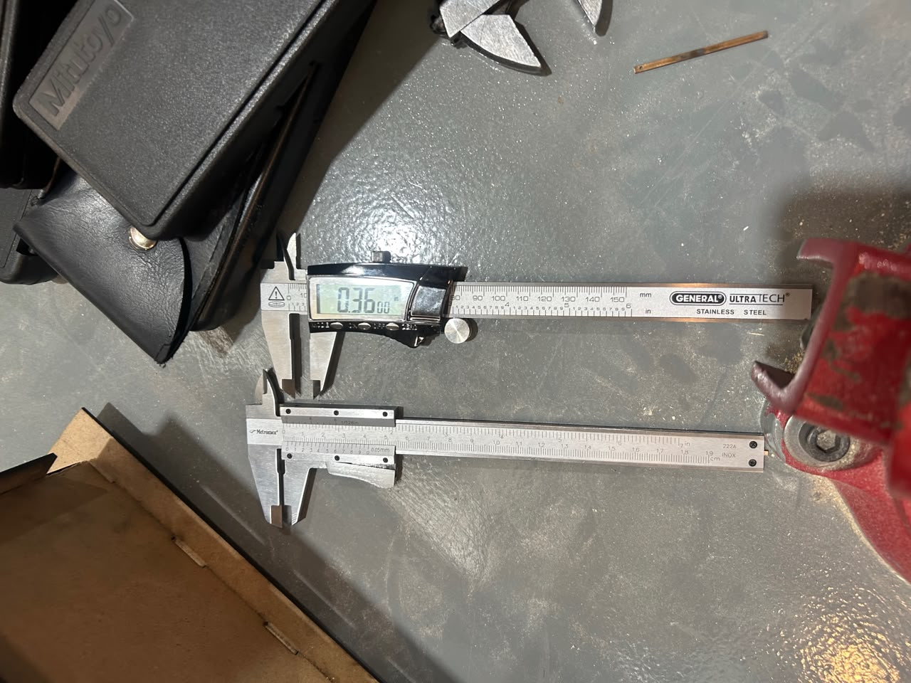
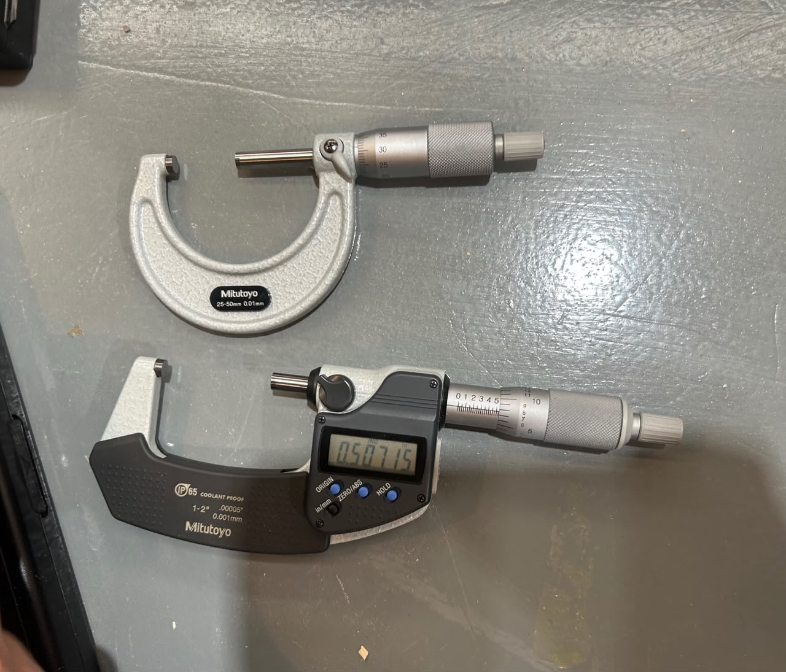
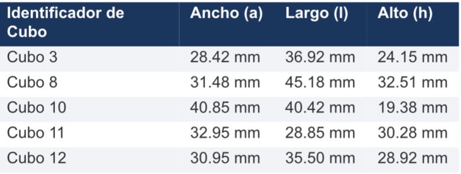
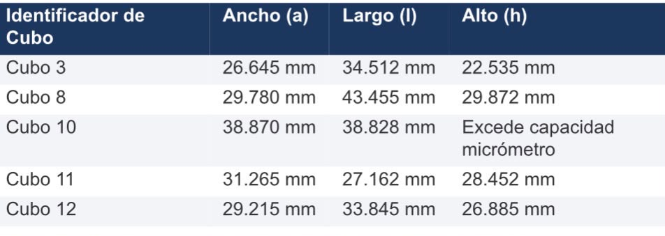
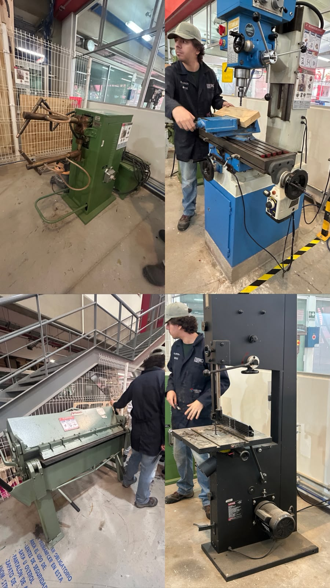

Reporte de Clase 6
Institución: Universidad Iberoamericana de Puebla
Alumno: Jesús Emiliano
Tema: Metrología Dimensional y Herramientas del Taller Mecánico
1. Introducción de la Clase
En esta sesión le echamos un ojo al uso de varias herramientas e instrumentos de medición y equipos chidos del taller. Vimos cómo operan las máquinas de manufactura y los aparatos de metrología, y cerramos con una práctica para comparar la precisión entre instrumentos.
2. Instrumentos y Herramientas del Taller
Instrumentos de Medición de Precisión
- Vernier (Digital y Mecánico): El instrumento clásico para medir exteriores, interiores y profundidades con buen nivel de detalle. El mecánico te pide leer el nonio, mientras que el digital te avienta el número directo en la pantallita LCD.
- Micrómetro: Sirve para medir espesores o diámetros muy pequeños con una precisión todavía mayor que la del vernier (llega a medir hasta micras).
Equipos y Maquinaria del Taller
- Broca y Fresa: La broca hace hoyos cilíndricos bajando en el taladro, y la fresa es la que gira en la fresadora para desgastar, ranurar o darle forma al metal.
- Fresadora: La máquina encargada de maquinar piezas arrancando viruta con una fresa giratoria.
- Sierra Cinta: Usa una banda metálica con dientes continua para cortar perfiles o bloques de metal sin tanto rollo.
- Corta Láminas (Cizalla): Para hacer cortes rectos y limpios en láminas delgadas usando palanca o presión.
- Soldadora por Puntos: Junta dos láminas metálicas superpuestas aplicándoles presión y un toque de corriente eléctrica intensa justo en el punto que necesitas.
- Dobladora de Láminas: Equipo mecánico para doblar la lámina al ángulo exacto que te pidan de forma controlada.
3. Práctica de Medición Comparativa
Para la parte práctica, el profe Oliver nos puso a medir el largo, alto y ancho de 5 cubos. Hicimos la chamba en dos partes para comparar qué tan cabrona era la diferencia:
- Primera medición: Tomamos las dimensiones de los 5 cubos usando el vernier.
- Segunda medición: Volvimos a medir las mismas cotas pero usando el micrómetro para ver la variación real entre los aparatos.
4. Evidencias de la Práctica
Medición e Instrumentos de Medición
| Uso del Vernier | Uso del Micrómetro |
|---|---|
 |
 |
Mediciones de Cubos y Equipos del Taller
| Medición de Cubos | Herramientas del Taller |
|---|---|
  |
 |
5. Conclusiones y Aprendizajes
- El nivel de precisión importa: Comprobamos que el micrómetro es mucho más exacto que el vernier, ideal para cuando andas trabajando con tolerancias bien cerradas donde cualquier milésima te arruina el ensamble.
- Elegir la herramienta correcta: Aprendimos a identificar cuál instrumento de medición usar según el nivel de precisión que te pida el proyecto en el taller.